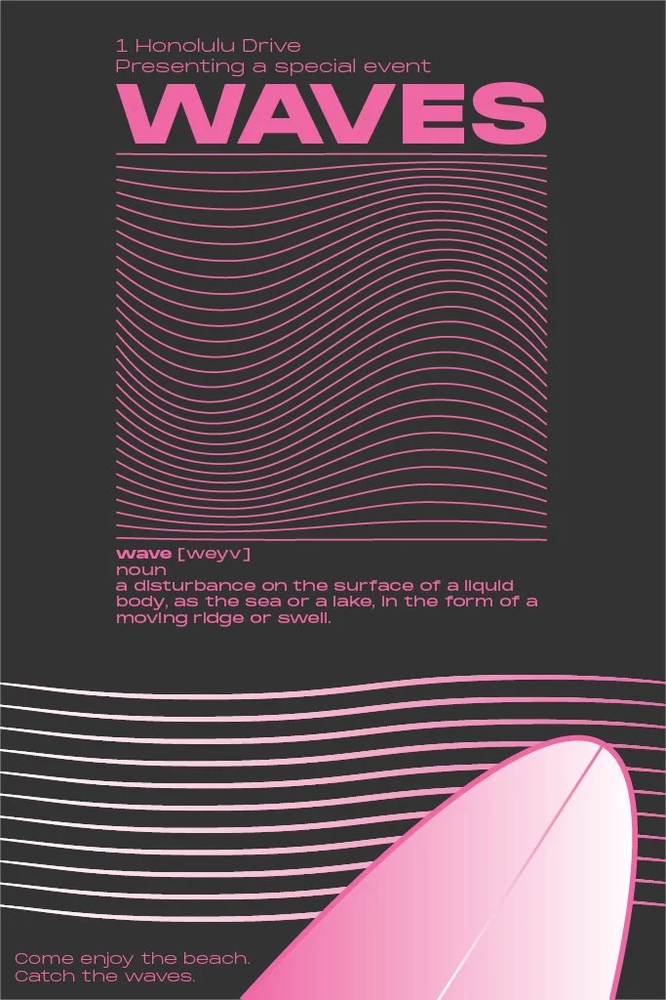
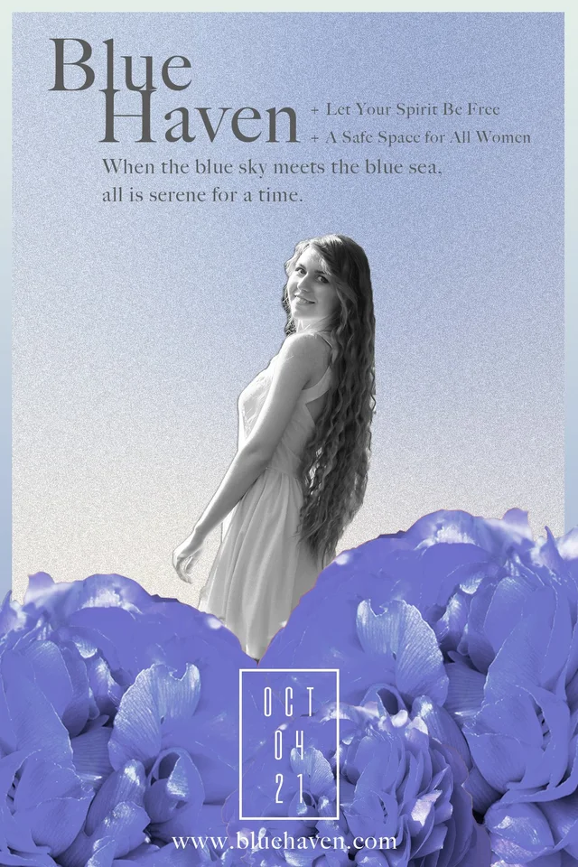
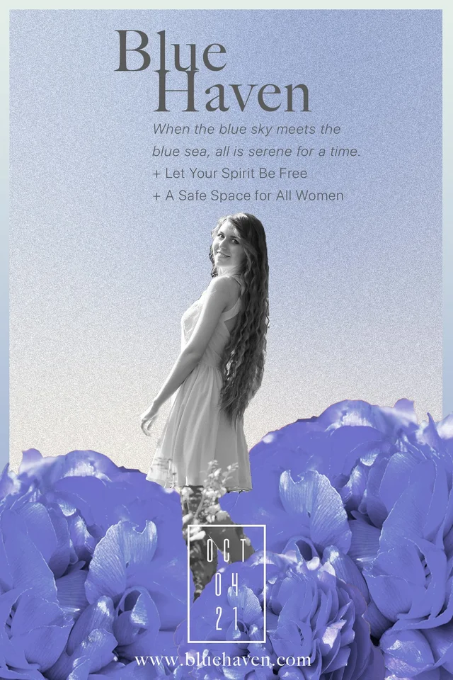

01 / VISUAL CRAFT · 2021
Light &
Form.
How does light define form?
Illustration, photo editing & art direction
Self-directed study
Same form. Different feeling.
01 / 02I kept the wave pattern, type and diagonal form in place, then changed the palette.

THE DECISIONLet colour change the mood while the reading order holds.
Make room to breathe.
02 / 02In Blue Haven, I adjusted the title, figure scale and text grouping to rebalance the composition.

Offset type. A larger figure.

More space through the centre.
WHAT STAYSThe monochrome figure and blue flowers preserve the mood.
THE SHORT VERSION
Four plates.
One visual language.
Created independently in Illustrator and Photoshop, from pencil studies to poster colourways and edited photo plates.
Explore the full case study A little about the designer →